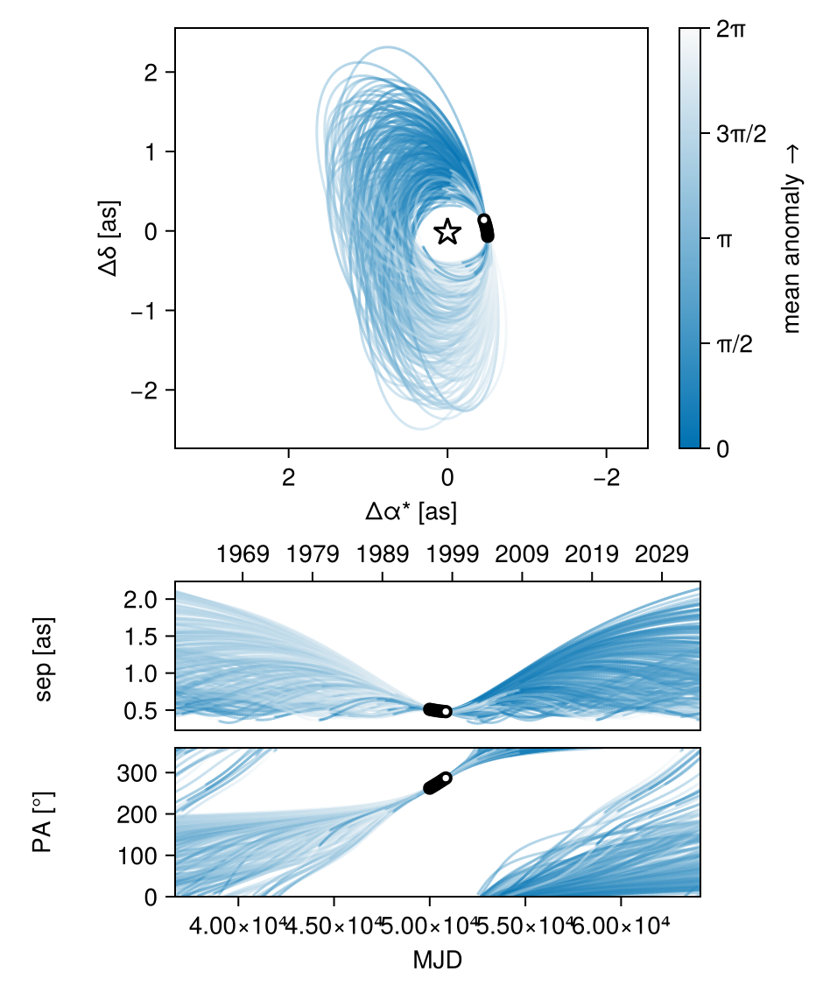
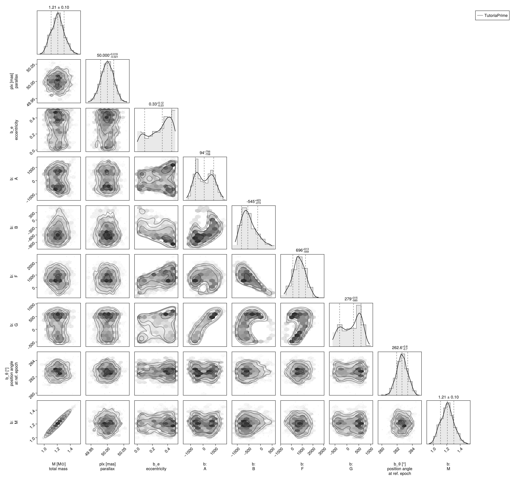
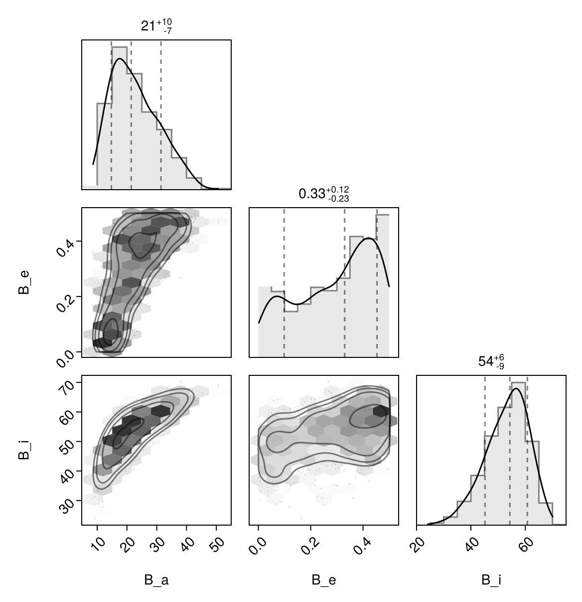

Fit with a Thiele-Innes Basis
This example shows how to fit relative astrometry using a Thiele-Innes orbital basis instead of the traditional Campbell basis used in other tutorials. The Thiele-Innes basis is more suitable then Campbell for fitting low-eccentricity orbits, because it does not have the issues where ω, Ω, and tp become degenerate as eccentricity and/or inclination fall to zero.
At the end, we will convert our results back into the Campbell basis to compare.
using Octofitter
using CairoMakie
using PairPlots
using Distributions
astrom_dat = Table(;
epoch = [50000, 50120, 50240, 50360, 50480, 50600, 50720, 50840],
ra = [-505.7637580573554, -502.570356287689, -498.2089148883798, -492.67768482682357, -485.9770335870402, -478.1095526888573, -469.0801731788123, -458.89628893460525],
dec = [-66.92982418533026, -37.47217527025044, -7.927548139010479, 21.63557115669823, 51.147204404903704, 80.53589069730698, 109.72870493064629, 138.65128697876773],
σ_ra = [10, 10, 10, 10, 10, 10, 10, 10],
σ_dec = [10, 10, 10, 10, 10, 10, 10, 10],
cor = [0, 0, 0, 0, 0, 0, 0, 0]
)
astrom_like = PlanetRelAstromLikelihood(
astrom_dat,
name = "GPI",
variables = @variables begin
# Fixed values for this example - could be free variables:
jitter = 0 # mas [could use: jitter ~ Uniform(0, 10)]
northangle = 0 # radians [could use: northangle ~ Normal(0, deg2rad(1))]
platescale = 1 # relative [could use: platescale ~ truncated(Normal(1, 0.01), lower=0)]
end
)
planet_b = Planet(
name="b",
basis=ThieleInnesOrbit,
likelihoods=[astrom_like],
variables=@variables begin
e ~ Uniform(0.0, 0.5)
A ~ Normal(0, 1000) # milliarcseconds
B ~ Normal(0, 1000) # milliarcseconds
F ~ Normal(0, 1000) # milliarcseconds
G ~ Normal(0, 1000) # milliarcseconds
M = system.M
θ ~ UniformCircular()
tp = θ_at_epoch_to_tperi(θ, 50000.0; system.plx, M, e, A, B, F, G) # reference epoch for θ. Choose an MJD date near your data.
end
)
sys = System(
name="TutoriaPrime",
companions=[planet_b],
likelihoods=[],
variables=@variables begin
M ~ truncated(Normal(1.2, 0.1), lower=0.1)
plx ~ truncated(Normal(50.0, 0.02), lower=0.1)
end
)
model = Octofitter.LogDensityModel(sys)LogDensityModel for System TutoriaPrime of dimension 9 and 9 epochs with fields .ℓπcallback and .∇ℓπcallback
Initialize the starting points, and confirm the data are entered correcly:
init_chain = initialize!(model)
octoplot(model, init_chain)We now sample from the model as usual:
results = octofit(model)Chains MCMC chain (1000×28×1 Array{Float64, 3}):
Iterations = 1:1:1000
Number of chains = 1
Samples per chain = 1000
Wall duration = 6.18 seconds
Compute duration = 6.18 seconds
parameters = M, plx, b_e, b_A, b_B, b_F, b_G, b_θx, b_θy, b_θ, b_M, b_tp, b_GPI_jitter, b_GPI_northangle, b_GPI_platescale
internals = n_steps, is_accept, acceptance_rate, hamiltonian_energy, hamiltonian_energy_error, max_hamiltonian_energy_error, tree_depth, numerical_error, step_size, nom_step_size, is_adapt, loglike, logpost, tree_depth, numerical_error
Summary Statistics
parameters mean std mcse ess_bulk ess_tai ⋯
Symbol Float64 Float64 Float64 Float64 Float6 ⋯
M 1.2078 0.0963 0.0039 612.4203 737.608 ⋯
plx 49.9997 0.0201 0.0006 1217.1230 636.184 ⋯
b_e 0.2952 0.1491 0.0083 346.4927 380.215 ⋯
b_A 117.3822 681.3559 62.8903 116.4233 313.491 ⋯
b_B -480.0302 349.3635 33.0784 117.5873 106.007 ⋯
b_F 719.2210 578.7746 56.6221 106.2484 90.145 ⋯
b_G 189.8570 391.1722 41.3758 110.1140 334.459 ⋯
b_θx -0.1281 0.0176 0.0007 711.0275 545.188 ⋯
b_θy -0.9938 0.1005 0.0038 748.9012 651.242 ⋯
b_θ -1.6990 0.0125 0.0004 778.8198 397.812 ⋯
b_M 1.2078 0.0963 0.0039 612.4203 737.608 ⋯
b_tp 28416.5741 23557.6887 1595.7172 245.3727 409.567 ⋯
b_GPI_jitter 0.0000 0.0000 NaN NaN Na ⋯
b_GPI_northangle 0.0000 0.0000 NaN NaN Na ⋯
b_GPI_platescale 1.0000 0.0000 NaN NaN Na ⋯
3 columns omitted
Quantiles
parameters 2.5% 25.0% 50.0% 75.0% ⋯
Symbol Float64 Float64 Float64 Float64 F ⋯
M 1.0278 1.1411 1.2085 1.2700 ⋯
plx 49.9596 49.9861 50.0001 50.0134 5 ⋯
b_e 0.0164 0.1768 0.3297 0.4218 ⋯
b_A -978.0572 -490.1372 93.7863 709.9534 132 ⋯
b_B -1001.4369 -737.0064 -545.2084 -277.2506 37 ⋯
b_F -457.3646 356.1376 696.4914 1102.6354 185 ⋯
b_G -499.0603 -177.8507 279.1310 537.1233 72 ⋯
b_θx -0.1639 -0.1387 -0.1274 -0.1149 - ⋯
b_θy -1.2215 -1.0579 -0.9888 -0.9220 - ⋯
b_θ -1.7224 -1.7073 -1.6992 -1.6911 - ⋯
b_M 1.0278 1.1411 1.2085 1.2700 ⋯
b_tp -28814.6034 14202.5870 35559.6295 48240.7482 4977 ⋯
b_GPI_jitter 0.0000 0.0000 0.0000 0.0000 ⋯
b_GPI_northangle 0.0000 0.0000 0.0000 0.0000 ⋯
b_GPI_platescale 1.0000 1.0000 1.0000 1.0000 ⋯
1 column omitted
Notice that the fit was very very fast! The Thiele-Innes orbital paramterization is easier to explore than the default Campbell in many cases.
We now display the results:
octoplot(model,results)
octocorner(model, results, small=false)
Conversion back to Campbell Elements
To convert our chain into the more familiar Campbell parameterization, we have to do a few steps. We start by turning the chain table into a an array of orbit objects, and then convert their type:
orbits_ti = Octofitter.construct_elements(model, results, :b, :) # colon means all rows1000-element Vector{ThieleInnesOrbit{Float64}}:
ThieleInnesOrbit{Float64}(0.32608930625167504, 48805.39328015131, 1.0950488205043485, 50.01354921548576, -510.06178924074203, -766.320995925875, 773.6525586286624, -124.34970927248668, -9.043234005900896, -13.232286572131942, 32415.541737474916, 0.07079731852188113, 1.4027659402530366)
ThieleInnesOrbit{Float64}(0.43775247955337665, 49156.82403221887, 1.0572723009607536, 50.000992972292686, -466.5215136783348, -944.7693956556353, 1254.7378116023824, 88.78816119983406, -19.448532358390985, -13.763916521121917, 54548.87426546504, 0.04207114196855698, 1.5991098124737706)
ThieleInnesOrbit{Float64}(0.34245346222467293, 21367.6511806589, 1.3739123948217107, 50.00045820780518, 1093.6579430879476, -142.94107816510703, 214.6049400830993, 577.8048662715114, 3.2740344189741353, -18.58374585045459, 32816.68821754682, 0.06993190227587504, 1.4288491208871923)
ThieleInnesOrbit{Float64}(0.43866122292525145, -859.6982601491181, 1.161563891057192, 50.00674176220576, 1108.0488502064504, -375.7943986796416, 940.4889489498004, 719.578601712741, -17.75748704894984, 17.37827041439767, 53951.216289874304, 0.042537195475203085, 1.600909371420346)
ThieleInnesOrbit{Float64}(0.4611036999381823, -14395.486998189168, 1.3770456956470476, 49.991285109111296, 1575.1662521685791, -114.74350237684283, 874.9194457944324, 818.281135711987, -18.545613450798644, 27.708955452236086, 69014.75269796474, 0.03325279514498677, 1.6465992730378036)
ThieleInnesOrbit{Float64}(0.12991616273176787, 21784.24047654082, 1.2307038663605703, 50.00502004404079, 36.566476449391814, -561.4889753525376, 953.3974489252179, 209.20727705249104, -16.08165851495273, -2.054231145820538, 28629.76131498871, 0.08015901383871696, 1.1395740730935215)
ThieleInnesOrbit{Float64}(0.48792216480714123, -14493.467852731541, 1.2010782807386355, 50.00420892381812, 1448.8032271612278, -356.1138476973273, 953.876147720836, 743.3373100810584, -17.875437322334967, 24.996939332640668, 68363.85717079478, 0.03356939658500933, 1.7045985612065688)
ThieleInnesOrbit{Float64}(0.25452092021167216, 22953.655352951813, 1.2722346432085048, 50.03115526101511, 586.1366665803824, -489.8641462831461, 811.031591460089, 412.57581679818475, -12.977988360936655, 8.412059332595158, 29048.04777027659, 0.07900473903088366, 1.2972426650110003)
ThieleInnesOrbit{Float64}(0.35293809820984745, 4627.068075809242, 1.0875121444120297, 50.0376853075511, 268.5648181257198, -690.5928596492811, 1227.4884695198427, 425.5539412618526, -21.33715067298903, 0.6696646062264773, 46360.440312412975, 0.049501976641772256, 1.4459925264537048)
ThieleInnesOrbit{Float64}(0.44652600746743965, 47857.89198760754, 1.2190086259381208, 49.961940491836124, -978.7821398519652, -887.3856574676952, 1077.2383307032583, -245.70012149319393, -15.686100367374983, -21.35968926255563, 56399.336719287785, 0.04069078763939628, 1.6166444437354954)
⋮
ThieleInnesOrbit{Float64}(0.2720861348420742, 47987.68551013254, 1.1923131707767545, 50.01322610520151, -635.3276347283818, -635.098244008318, 472.5061198516287, -310.8150492046296, -2.884025977858048, -14.250043678893949, 25954.845285610212, 0.08842023168289476, 1.3219598453313735)
ThieleInnesOrbit{Float64}(0.06789929205963675, 47293.840352051586, 1.142266230218022, 49.99777419329451, -467.8821597561869, 36.15874201722114, -94.0464787869518, -495.7571388613103, 4.401893787343183, -2.369801563512423, 11407.467155279748, 0.2011781758569582, 1.07036951217108)
ThieleInnesOrbit{Float64}(0.03600837907077558, 45839.75889385397, 1.1592797513705202, 50.01549904467083, -544.3882127158049, 84.63130057430226, -225.35311075496054, -496.36208232116434, 5.5679660157927175, -5.791832650497727, 14709.738119230511, 0.1560145676860898, 1.0366806788954803)
ThieleInnesOrbit{Float64}(0.10530619728976784, 46467.31032971291, 1.3256575438148572, 50.017923040464204, -597.4178504249772, -149.65277151359837, -75.77617796476656, -522.7134443896542, 5.7643755579804665, -8.563430104106926, 15903.084169383494, 0.1443074443299202, 1.11148623331307)
ThieleInnesOrbit{Float64}(0.208697549882689, 46572.30216979245, 1.273958644103573, 50.021851888024926, -746.2982767606982, -316.7708592738715, 75.4761295231429, -494.9165168652491, 3.061839618335866, -13.111030793870853, 21678.431206161153, 0.1058625235203878, 1.2359120473885947)
ThieleInnesOrbit{Float64}(0.4659224941144072, 49063.433294719594, 1.1927170125501434, 49.99302925562116, -562.572058747031, -947.1686288863987, 764.5926310549731, -190.94756139938164, -6.031370539426298, -16.536767550674266, 36522.21264335845, 0.06283664836677623, 1.656736197331375)
ThieleInnesOrbit{Float64}(0.203546670526167, 47848.23917768434, 1.18655232809324, 50.01050583508157, -640.1123370428786, -532.0503559752614, 458.13117314858096, -334.74896244627195, -3.6238322176356514, -12.70519481646599, 23573.0350801286, 0.09735417716244386, 1.229281375609279)
ThieleInnesOrbit{Float64}(0.3247687091503861, 48964.80816843537, 1.199917358417167, 49.98759582586494, -461.2514485935262, -681.4421712115397, 520.7404079920427, -264.2694701367885, -2.042663317730862, -11.77633928208501, 22527.03171076174, 0.1018746483297662, 1.4006955565907353)
ThieleInnesOrbit{Float64}(0.1651609128686172, 47632.463241520265, 1.1729209351807153, 49.9732018608937, -535.1322514214835, -265.0563044427006, 91.32125532558906, -493.7314176302724, 4.243853462721624, -7.736896932845162, 15230.09594157237, 0.15068410877065117, 1.181385310006206)Here is one of those entries:
display(orbits_ti[1])We can now make a table of results (and visualize them in a corner plot) by querying properties of these objects:
table = (;
B_a = semimajoraxis.(orbits_ti),
B_e = eccentricity.(orbits_ti),
B_i = rad2deg.(inclination.(orbits_ti)),
)
pairplot(table)
We can also convert the orbit objects into Campbell parameters:
orbits_campbell = Visual{KepOrbit}.(orbits_ti)
orbits_campbell[1]KepOrbit{Float64}
─────────────────────────
a [au ] = 20.5
e = 0.32608931
i [° ] = 51.4
ω [° ] = 214.0
Ω [° ] = 33.3
tp [day] = 48800.0
M [M⊙ ] = 1.1
period [yrs ] : 88.7
mean motion [°/yr] : 4.06
──────────────────────────
plx [mas] = 50.0
distance [pc ] : 20.0
──────────────────────────